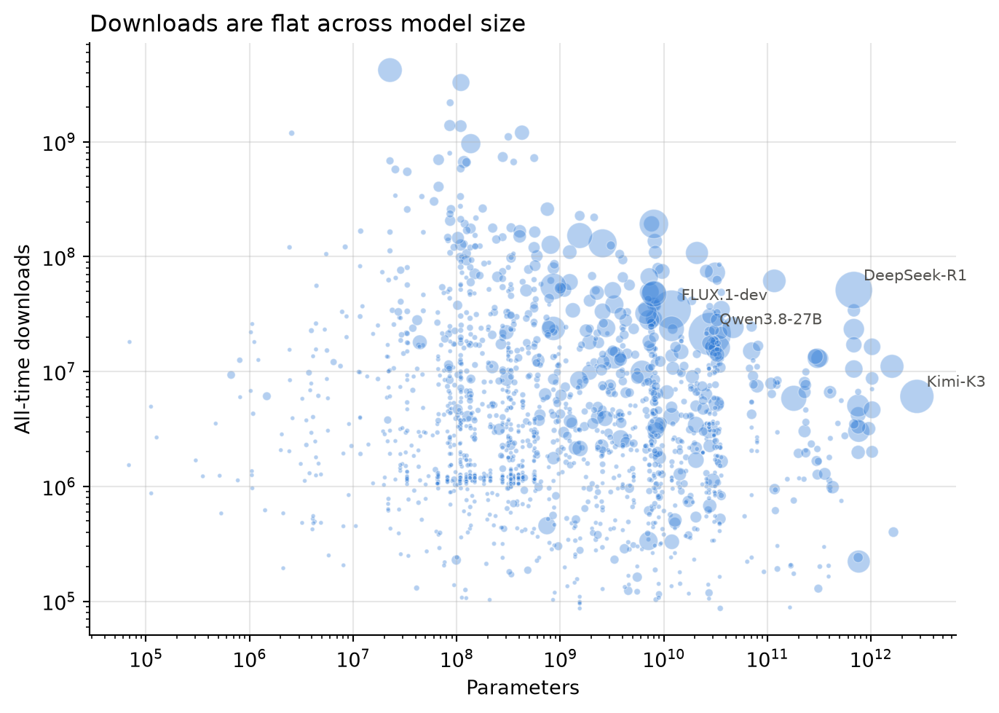
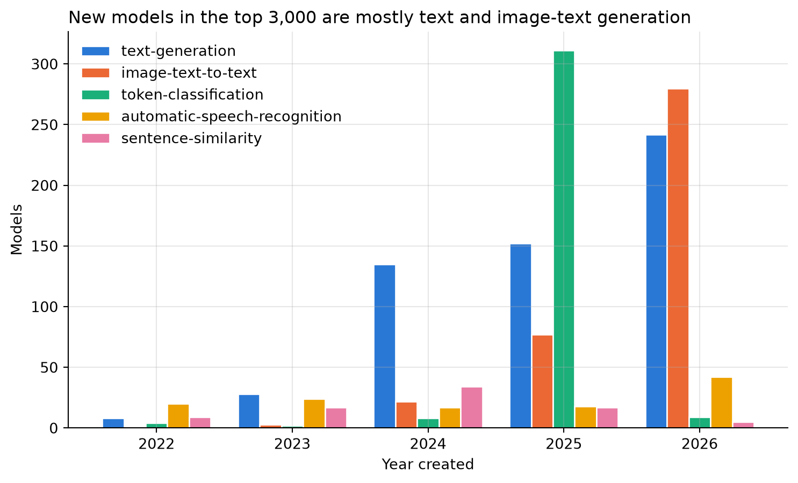

What Makes a Hugging Face Model Popular? Building a Dataset of the 3,000 Most Downloaded Models
data-curation
apis
pandas
Two free APIs, three scripts, and a dataset of which models people actually use.
Author
Will Westover
Published
November 4, 2026
Why I did this
I’m really into machine learning, and Hugging Face is basically where everyone shares open models. Every model page shows a download count and a like count, and I think those two numbers are a pretty honest signal of what people actually use, not just what gets hype. So I wanted a dataset of the most downloaded models with enough features to ask a simple question:
Does a model’s task, library, license, or size have anything to do with how popular it is?
A second question came up once I had the data: are downloads and likes even measuring the same thing?
The Hub API docs say the endpoint I used is public and doesn’t need a token. The rate limit page says 500 requests per 5 minutes, and the response headers tell you how many you have left.
The arXiv API is free and asks for about 3 seconds between requests.
The data is about models, not people. The only person-like field is the author, which is a public username or org name. There are no model weights and no user data, so I felt fine putting the CSV in the repo. I also sent a User-Agent that names the project and links to the repo so anyone on their end can tell what the traffic is.
How to get the data
It’s three scripts, and you don’t need an API key for either source.
1. One request per 1,000 models
My original plan was to list the top models and then hit the detail endpoint 3,000 times to get the license and parameter count. It turns out you don’t need to. The list endpoint has an expand[] parameter that adds those fields to the same call, and limit goes up to 1,000, so the whole thing is 3 requests.
params = {"sort": "downloads", "direction": -1, "limit": 1000,"expand[]": ["author", "pipeline_tag", "library_name", "tags", "cardData","downloads", "downloadsAllTime", "likes", "createdAt","lastModified", "safetensors", "gated"],}response = session.get("https://huggingface.co/api/models", params=params)next_url = response.links["next"]["url"] # pagination comes from the Link header
Two things tripped me up. Pagination is a Link header instead of a field in the JSON (requests parses it for you as response.links), and the license isn’t its own field. It’s in tags as license:apache-2.0, so you pull it out of the tag list.
I save the raw JSON exactly as it came back, plus one flattened row per model. That way if I want a different field later I don’t have to hit the API again.
2. Look up the papers
About half of the models have tags like arxiv:1908.10084. The arXiv API takes a comma-separated id_list, so I sent 100 IDs per request (8 requests total, 3 seconds apart) and parsed the Atom XML with the standard library. That gives each paper’s date and primary category (cs.CL, cs.CV, and so on).
3. Clean
The cleaning script joins the two raw files and makes the decisions I didn’t want to make while collecting:
329 models (11%) have a creation date of exactly 2022-03-02. That’s the day the Hub migrated, not a real date, so I blank it out and keep a created_at_known flag.
Parameter counts come from safetensors metadata, and 1,168 models don’t have it. I left those missing instead of guessing.
Each model gets its earliest paper’s date and category, a size bucket, and likes per million downloads.
The dataset
3,000 rows and 28 columns, collected November 4, 2026. There are 789 different authors, 47 tasks, 99 libraries, and 29 licenses.
Everything is really skewed. The median model has about 2.2 million all-time downloads and 58 likes, but the top model (sentence-transformers/all-MiniLM-L6-v2) has 4.2 billion downloads on its own, which is 6.6% of all the downloads in the dataset. The top 10 models have 28%. So everything below uses medians and log scales.
The most common tasks are text-generation (577 models), image-text-to-text (382), and token-classification (354). That last one is mostly one org. OpenMed uploaded 237 medical NER models on a single day in July 2025, and 315 of the top 3,000 models are theirs.
What I found
Downloads and likes are measuring different things
The correlation between log likes and log downloads is only 0.42. Grouping by task shows why.
Median all-time downloads and median likes by task, for tasks with at least 30 models.
The most downloaded task is fill-mask (median 18.6 million), which is BERT and models like it. They’re old and small and get pulled into a ton of pipelines, but hardly anyone likes them. The most liked tasks are image-to-image (median 405) and text-to-image (210), which are the ones people actually play with.
The extremes make it even more obvious. The models with the fewest likes per download are things like vllm-project/tiny-random-LlamaForCausalLM (2 likes, 26 million downloads). Those are tiny test models that CI pipelines download over and over, so a lot of the download count is automation and not people.
Bigger models get more likes but not more downloads
Code
has_size = models[models["num_parameters"] >0]fig, ax = plt.subplots(figsize=(8, 5.5))ax.scatter(has_size["num_parameters"], has_size["downloads_all_time"], s=5+ has_size["likes"] /40, color=BLUE, alpha=0.35, edgecolors="white", linewidths=0.5)ax.set_xscale("log")ax.set_yscale("log")ax.set_xlabel("Parameters")ax.set_ylabel("All-time downloads")ax.set_title("Downloads are flat across model size")for _, row in has_size.nlargest(4, "likes").iterrows(): ax.annotate(row["model_id"].split("/")[-1], (row["num_parameters"], row["downloads_all_time"]), fontsize=8, color=GRAY, xytext=(5, 5), textcoords="offset points")plt.show()

Parameters vs all-time downloads for the 1,832 models with a parameter count, both axes log. Point size is likes.
The correlation between log parameters and log downloads is actually slightly negative (-0.11). Median downloads are about the same in every size bucket (2.3 to 3.8 million), and the smallest bucket is the highest. Likes are different. The median goes from 12 likes for models under 100M parameters to 162 for models over 10B, with a correlation of 0.43. So people like the big flagship models but run the small ones.
Library and license mostly tell you who made the model
transformers is 55% of the dataset. diffusers models have the highest median likes (265) since they’re image models. For license, 55% are apache-2.0 and 14% are MIT, and apache-2.0 models have the lowest median likes (46). The licenses with the most likes are other and gemma, which really just means a big lab wrote its own license. Gated models are the same story. There are only 89 of them, but they have a median of 1,137 likes compared to 54 for everything else. Gating is something Meta and Google do, so it’s tracking the lab more than anything.
The newer models are generation models
Code
top_tasks = models["task"].value_counts().head(5).indexby_year = models[models["task"].isin(top_tasks)].groupby(["created_year", "task"]).size().unstack("task")[top_tasks]ax = by_year.plot.bar(figsize=(9, 5), color=[BLUE, ORANGE, "#1baf7a", "#eda100", "#e87ba4"], width=0.8, edgecolor="white")ax.set_xlabel("Year created")ax.set_ylabel("Models")ax.set_title("New models in the top 3,000 are mostly text and image-text generation")ax.set_xticklabels([int(y) for y in by_year.index], rotation=0)ax.legend(title="", frameon=False)plt.show()

Models created per year among the top 3,000, five most common tasks. Models with the placeholder 2022-03-02 date are left out, and 2026 only runs through November 4.
Almost a third of the top 3,000 (978) were created in 2026, and they’re mostly text-generation and image-text-to-text. The older tasks like fill-mask and sentence-similarity still get downloaded a ton, but almost nothing new in those categories makes it into the top 3,000. On the paper side, half the models link an arXiv paper, cs.CL papers outnumber cs.CV 903 to 329, and the median gap from paper to model is 76 days. About a quarter of the models were on the Hub before their paper was.
Caveats
The top 3,000 by 30-day downloads is a small slice of a Hub with millions of models, so everything here is about the winners.
Downloads count CI runs and automated pipelines, not just people.
11% of the creation dates and 39% of the parameter counts are missing, and it isn’t random (older models and non-safetensors formats).
Downloads and likes change every day, so a rerun will give you different numbers.
Try it yourself
Everything is in the repo: the three scripts, the raw API output, the processed CSV, and a longer EDA. Run uv sync and then the scripts in order. If you want to go further, the same API works for datasets and Spaces, and the huggingface_hub package wraps all of it if you’d rather not deal with the pagination yourself.